1. 검토 결론
인트로 → 사진 촬영 → 위치 확인 → 의견/STT·AI 분류 → 저장 → 상세·목록·리포트의 핵심 현장 흐름이 실기기 화면으로 확인되었다.
확보 화면
12개 주요 페이지·상태, 15장 실제 캡처반영 확인
이중 진입, LIVE 촬영, 평면도·핀, 의견·AI, 최종 저장, 집계문서 성격
현행 구현 기준선이자 다음 APK 회귀검수 자료2. 전체 사용자 흐름
| 단계 | 핵심 사용자 판단 | 보존 데이터 |
|---|---|---|
| 인트로 | 어느 동·호수와 공간을 점검하는가 | 단지, 동·호수, 평형, 사용자, 공간 |
| 촬영 | 하자가 식별 가능한 사진인가 | 원본 사진, 앵커, 방향·거리, 좌표 |
| 의견·AI | 원문과 AI 추천이 실제 하자와 맞는가 | RAW 의견, STT, AI 추천, 점검자 수정 |
| 확정·집계 | 저장·마감할 정도로 정보가 완성됐는가 | 최종 분류, 상태, 수정 이력, 동기화 상태 |
3. 인트로·세대 공간 선택
브랜드 제목, 단지·동호수, 역할, 단지 안내도·세대 평면도와 두 개의 진입 버튼을 확인한다.
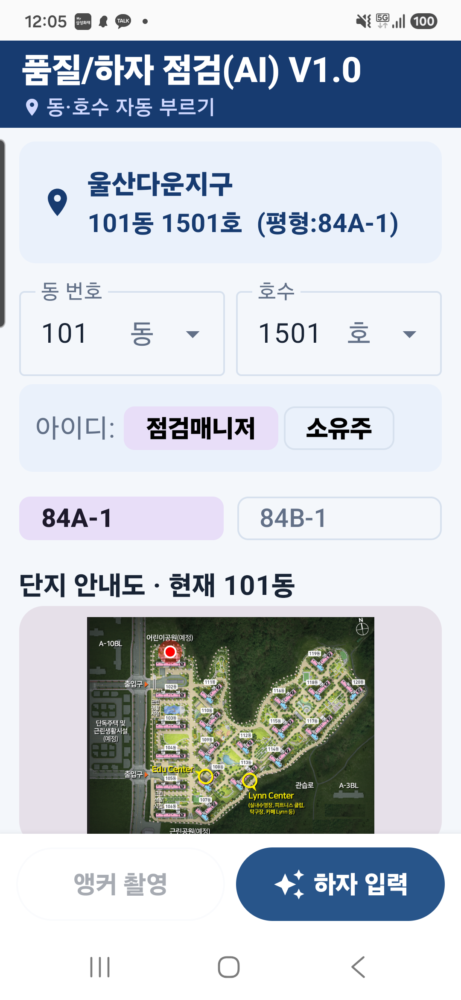
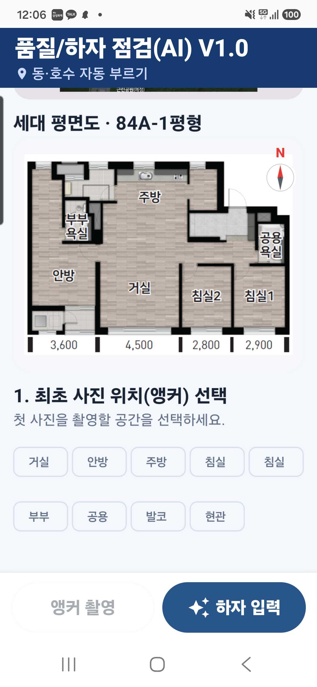
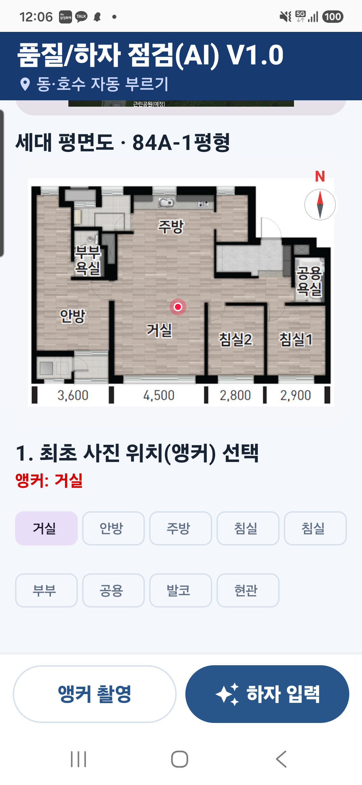
- 단지명과 동·호수·평형은 현재 세대에 맞춰 한 정보 블록에서 읽혀야 한다.
- 도면 탭 확대, 현재 동 표시, 평면도 나침반과 선택 공간이 같은 좌표 기준을 사용해야 한다.
- 하단의 앵커 촬영과 하자 입력은 서로 다른 진입 전략을 명확히 제공한다.
4. 점검매니저·소유주 로그인
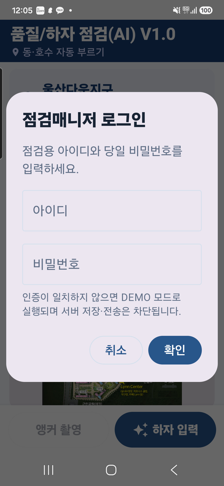
인증 성공은 정상 현장 모드로, 불일치는 DEMO 모드로 분리한다. 제품화 단계에서는 날짜 기반 테스트 비밀번호를 제거하고 서버 토큰·권한·감사 로그 방식으로 전환해야 한다.
5. LIVE DETECTION·하자 사진 촬영
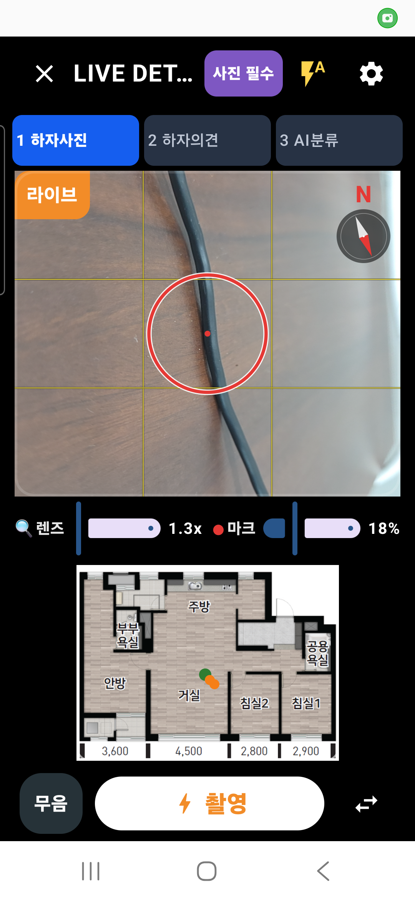
- 촬영은 신규 하자 입력의 기본이며, 기본값은 무음으로 유지한다.
- 센서 설명 문구를 제거해 확보한 공간에 미니 평면도와 현재 위치·핀·앵커를 표시한다.
- 카메라 중단·블랙아웃 시 lifecycle 재연결, 자동/수동 플래시, 품질 미달 재촬영 경로를 회귀검수한다.
6. 촬영 이미지 판별·위치 확인
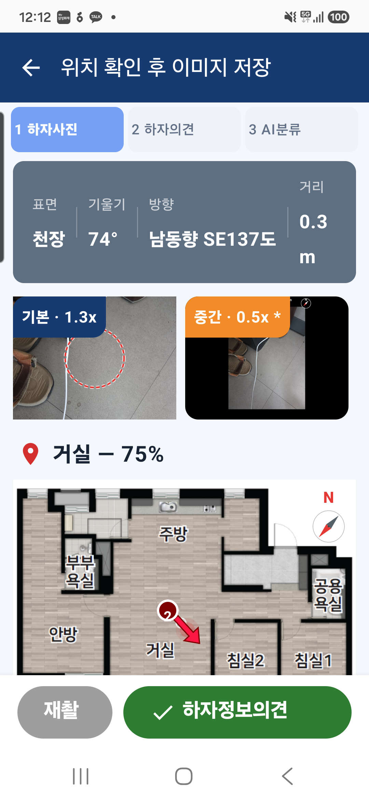
사진앵커는 “남동향 SE120도 / 0.5m”처럼 방향명·방위각·거리를 동시에 표시한다. 자동 위치를 기본값으로 두고, 사용자가 평면도를 눌렀을 때는 “위치 수정?” 확인 후 좌표를 변경한다.
7. 입주민 의견·STT·AI 추천·최종 분류
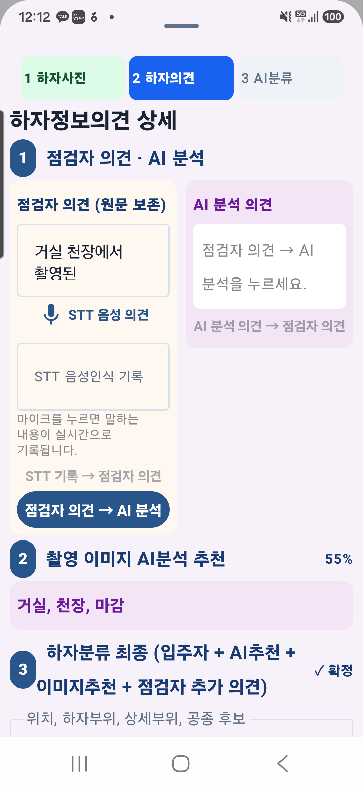
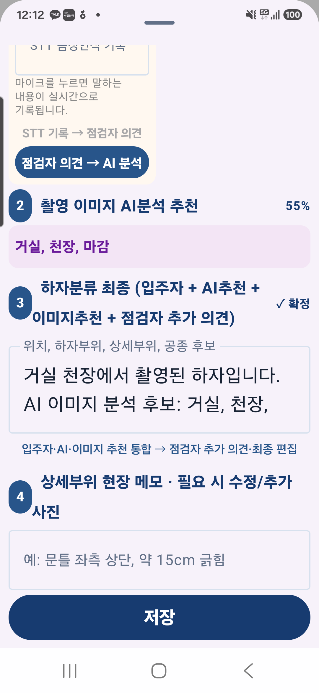
- STT 결과는 인식되는 대로 별도 텍스트 영역에 기록되고 입주민 의견 원문은 끝까지 보존한다.
- 텍스트 LLM 추천과 이미지 모델 추천은 근거 출처를 분리하고, 최종값은 점검자가 수정·확정한다.
- 점검자 의견 ↔ AI 분석 의견 전환은 원문을 덮어쓰지 않고 새 제안으로 반영해야 한다.
8. 품질/하자 점검 홈
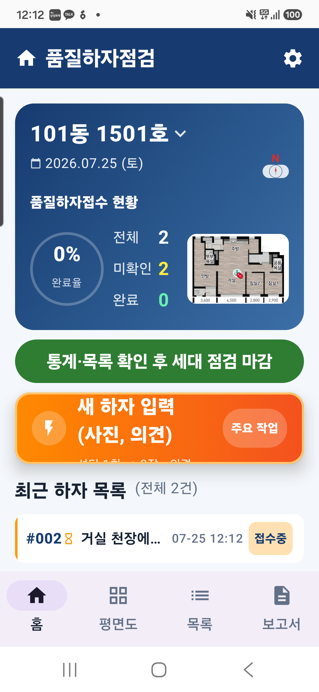
새 하자 입력을 핵심 CTA로 강조한다. AI 하자분류 어시스턴트 안내는 해당 세대 첫 하자 이전에 한 번만 노출하며, 어시스턴트에 진입하거나 하자가 등록된 뒤에는 숨긴다.
9. 하자 상세정보
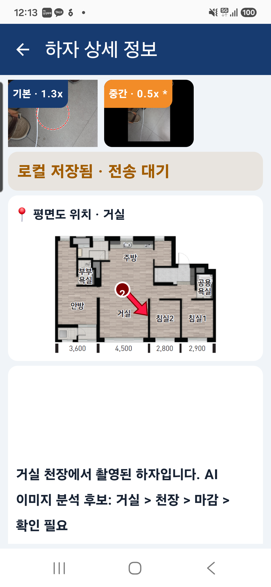
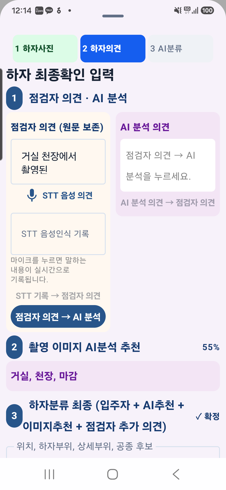
하단 용어가 잘리지 않도록 버튼 폭과 간격을 유지한다. “최종확인(완료처리)”와 “최종확인 저장”은 제품 전체에서 최종확인 & 저장으로 통일한다.
10. 세대 평면도·누적 위치
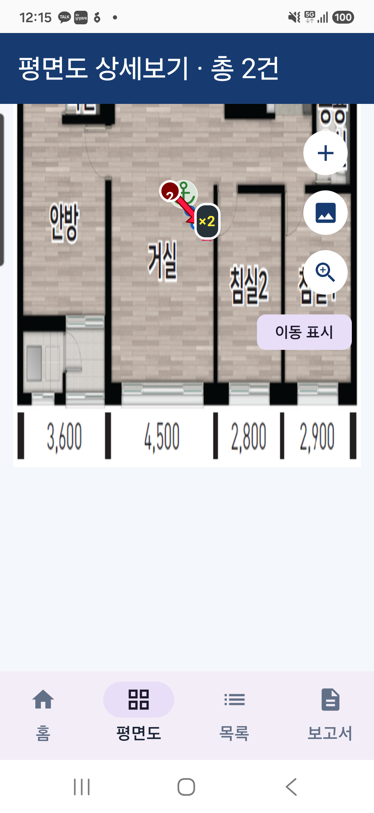
상세보기 최초 배율은 화면 맞춤으로 시작하고, 하단 가로 메뉴에서 확대·축소·배율·정렬·닫기를 제공한다. 나침반은 우측 상단에 배치하되 평면도 고유 방향에 맞춰 표시한다.
11. 전체 하자 목록
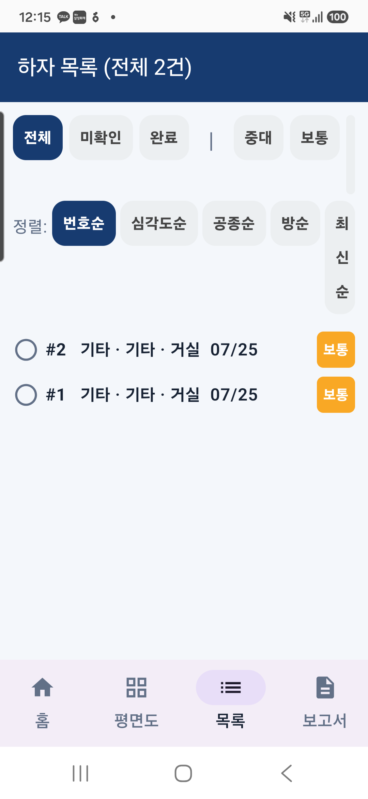
위치·하자유형·상태를 빠르게 스캔할 수 있어야 하며, 항목을 누르면 해당 상세정보로 이동해 수정 후 목록의 같은 위치로 복귀해야 한다.
12. 세대 점검 리포트·마감
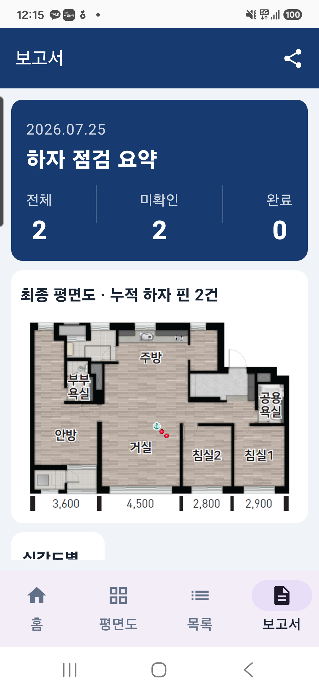
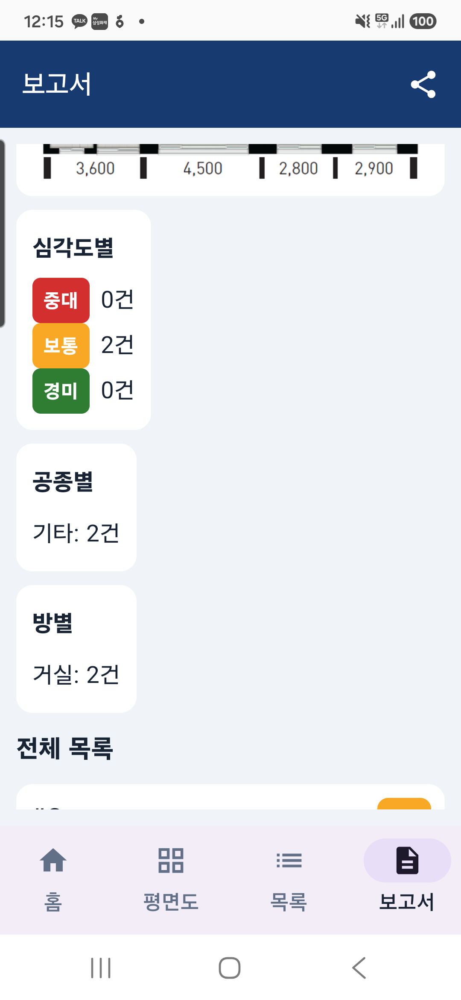
점검 마감 전 누적 하자 핀·전체 목록·집계를 최종 확인한다. 마감 후 다음 호수로 이동하면 이전 세대의 임시 하자·화면 상태를 초기화하되, 최근 동·호수는 다음 입력 추천값으로만 사용한다.
13. 다음 APK 공통 검수 항목
| 우선순위 | 검수 항목 | 합격 기준 |
|---|---|---|
| P0 | 카메라 안정성 | 평면도 확대·백그라운드·장시간 대기 후 프리뷰 블랙아웃 없이 복구 |
| P0 | STT 저장 | 음성 인식 결과가 의견란에 보이고 RAW/STT/수정본이 각각 DB에 보존 |
| P0 | 세대 전환 | 마감 후 새 동·호수 진입 시 이전 세대 핀·하자·화면 상태가 섞이지 않음 |
| P1 | 도면 좌표 | 확대·축소 후에도 현재 위치·앵커·하자 핀이 동일 좌표를 가리킴 |
| P1 | 스크롤·키보드 | S25 Ultra에서 모든 설명과 최종 CTA가 가려지지 않고 접근 가능 |
| P1 | 오프라인 동기화 | 통신 단절 중 로컬 저장, 복구 후 중복 없이 서버 전송 및 상태 표시 |
앵커 전용 촬영 화면은 LIVE 촬영과 동일한 카메라 컴포넌트를 사용하므로 본 문서에서는 LIVE 촬영 화면으로 대표했다. 다음 회귀 캡처에서는 신규 세대의 앵커 전용 상태를 별도로 추가한다.